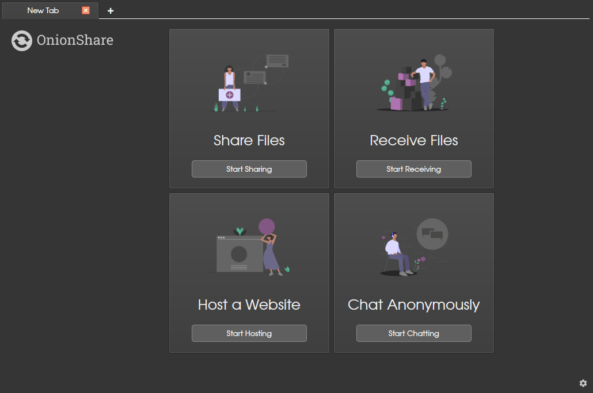
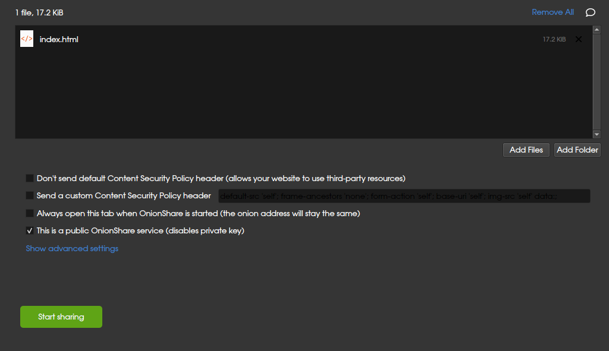
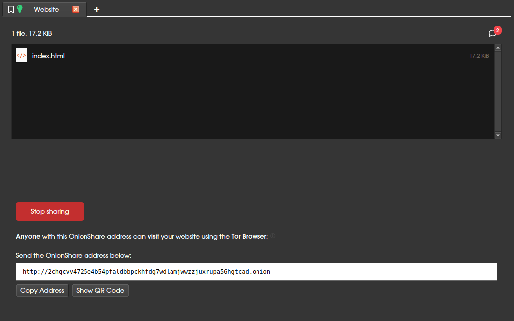
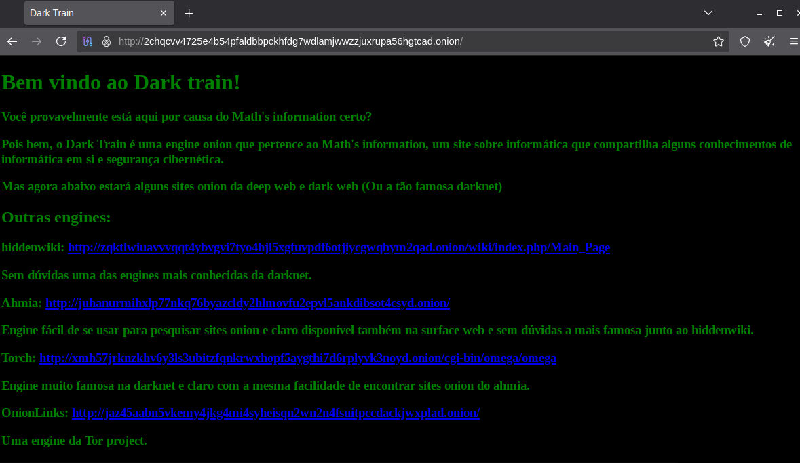

Como criar um site onion:
Bem você já sabe como entrar na darknet, mas você sabe pelo menos como criar um site
na darknet em si? Com o domínio .onion? Pois é, é bem diferente do que você pensa e até que fácil.
O que é um site onion?:
Um site onion é basicamente um site com domínio .onion que literalmente é um domínio de sufixo
superior, que não funciona em qualquer navegador, mas funciona no tor browser e sim esse tipo
de domínio é muito importante na darknet, já que é com esse tipo de domínio que ele funciona apenas
no tor browser e não em navegadores qualquer, sendo assim o difícil acesso.
Como criar um site na darknet:
Primeiro de tudo iremos precisar deste software, pois, é com ele que iremos
conectar nosso site na rede tor ou no caso nosso script.

Com ele instalado na primeira vez que você entrar só precisa esperar ele se conectar na rede tor e após
ele ter se conectado aqui terá algumas opções e a que iremos escolher é "Host a website"

Após clicarmos irá aparecer tipo essa tela só que sem o script e bem após isso clique em "add file"
que logo irá abrir seu explorador de arquivos (Ou se você estiver no linux, o Thunar) e você seleciona
o seu script e no meu caso aqui eu selecionei um index.html e após isso só clicar em "Start sharing".

Após isso quando você clicar ele irá criar um link onion desta página, mas agora que fizemos o site onion
vamos testar?

E pronto! Finalmente conseguimos criar um site onion ah e um aviso se caso você não marca como
público, toda vez que a pessoa quiser entrar no seu site onion teria que colocar uma senha
e se caso você quiser que a pessoa não precise colocar senha você precisaria marcar como público.
Aviso: Eu acabei excluindo o site onion por erros técnicos, mas em breve irá existir um site onion para nós, acompanhe
pela comunidade!